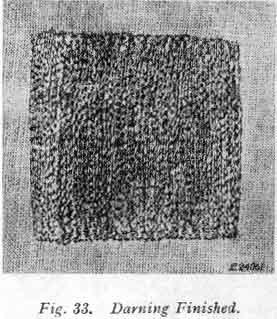

TO
REMOVE AND REPLACE NEEDLE THREAD TENSION
TO
REMOVE AND REPLACE NEEDLE THREAD TENSIONTurn thumb nut A2 to left (counter-clockwise) until "0" on numbered dial R stops at centre line S on indicator E2. Press in dial R to disengage pin B2 in thumb nut A2, unscrew thumb nut and remove it. Then remove dial, stop washer C2, tension spring D2, indicator E2, tension discs F2, thread guard G2 and pin H2.
If thread take-up spring P2 requires to be replaced, loosen screw Q2, Fig. 29 and remove stud J2 and spring P2.
TO
REMOVE AND REPLACE NEEDLE THREAD TENSIONPlace thread take-up spring P2 on short end of stud J2 and insert the stud with spring into the regulator R2.
Turn stud until correct tension is obtained, then tighten screw Q2. Place thread guard G2 on stud so that the lug K2 engages the short recess L2 so as to position the thread guard.
Insert tension releasing pin H2 in stud. Place two tension discs F2 on stud with their convex faces together.
Replace indicator E2, open side
out, on stud with plus and minus signs at top. Insert tension spring D2
in indicator  so
that first turn turn M2 of this spring will straddle
lower half of tension stud.
so
that first turn turn M2 of this spring will straddle
lower half of tension stud.
If spring and stop washer are in the correct position, extension N2 will clear first (half) coil of tension spring, as shown in Fig. 30.
Next place numbered dial R on stud and push dial to compress spring so that thumb nut A2 can be turned on to stud, carefully guiding pin B2 in thumb nut into one of the holes in numbered dial.
Lower presser bar and turn thumb nut to left until it stops at "0".
Thread the tension and pull thread through tension discs to test amount of tension at the "0" position. At this point there should be a barely perceptible pull on the thread to indicate that there is a minimum tension which gradually increases with the turning of thumb nut A2 to the right, providing a full range of tensions from light to heavy within one revolution of the thumb nut.
If the pull is too strong for a minimum tension, press in dial R to disengage pin B2 in nut from dial, and reset pin in one of holes at left of previous setting. This resetting will produce less tension at "0". Repeat this process until minimum desired tension is obtained.
If there is no tension at "0", press in dial R and reset pin B2 in one of holes at right of previous setting, repeating this process until a slight minimum tension is obtained.
The tension on thread take-up spring P2 and stroke of this spring should be just sufficient to take up slack of needle thread until eye of needle reaches fabric in its descent.
To adjust setting of thread take-up spring loosen screw S2 and move screw in slot to desired position. Then tighten screw S2.
If bobbin thread tension has been disturbed, or a correct stitch cannot be obtained without a very heavy or very light needle thread tension, then the following procedure is recommended:
Using size 50 mercurised thread in needle and on bobbin, adjust needle thread tension as instructed in Part Two.
Then turn tension thumb nut to "4" and, with two thicknesses of thin material in machine, adjust bobbin thread tension as instructed in Part Two, until stitch is correctly locked in material.
A wide range of materials and threads can now be accommodated without further adjustment of bobbin thread tension.
Breaking of needles might be caused by:
Breaking of needle thread might be caused by:
Breaking of bobbin thread might be caused by:
Skipping of stitches might be caused by:
 DARNING
AND EMBROIDERING
DARNING
AND EMBROIDERINGTurn pointer of feed throw-out A3, clockwise to "darn" position as shown in Fig. 31.
The feed is thus rendered inoperative and will not interfere with the free movement of the work.
Move stitch regulating lever O, Fig. 21 to its neutral position in the centre of slot at front of machine.
Remove presser foot F and let down presser bar lifter E, Fig. 5 to restore tension on needle thread which is releases when lifter is raised.
Draw up bobbin thread as instructed in Part Two.
When darning flat work, it is advisable to use embroidery hoops to hold the work.
Place the work in machine, have the unworn part near the hole under the needle. Start darning by making a line of stitches across hole a little longer than width of hole. Continue making parallel lines of stitches across hole, moving the work backward and forward and at same time gradually moving the work sidewise until hole is covered with lines of stitches running across hole. Then start as before and move the work lengthwise of hole until the stitches across hole are completely covered and the darn is finished.

When you have finished darning or embroidering, raise presser bar lifter and replace presser foot.
Turn pointer of feed throw-out A3, Fig. 31 counterclockwise to "sew" position. Then return stitch regulating lever O, Fig. 21, to its original position and the machine is ready for regular stitching.